Electricity is the flow of electrons through a conductor. To cause that flow, a force must be applied to the electrons. That force is called the electromotive force (EMF), or more commonly, voltage.
Voltage indicates the intensity of the force exerted on the electrons: the higher the voltage, the stronger the push, and the higher the resulting current.
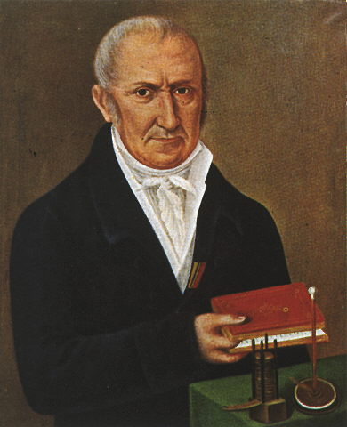
Voltage is always measured as a difference in charge (potential difference) between two points in a circuit.
When two points are connected by a conductor, current flows from the point with the highest voltage to the point with the lowest voltage.
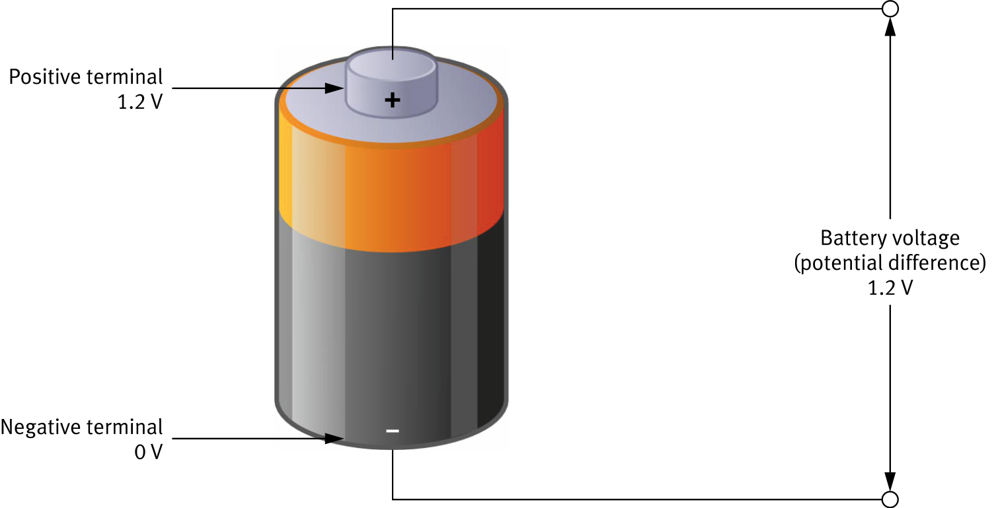
While voltage is the force pushing electrons, current is the number of electrons passing through a conductor per second. The higher the current, the greater the flow of electricity.
Current is named after French mathematician and physicist André-Marie Ampère, considered the father of electrodynamics.
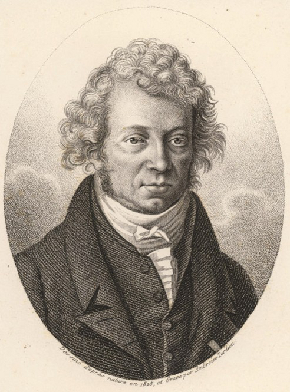
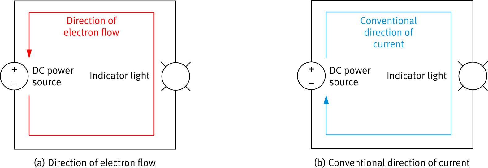
A filled tank has high water pressure and produces high water flow. A depleted tank has low pressure and low flow.
The same relationship exists in an electrical circuit:
| Water System | Electrical Circuit |
|---|---|
| Water capacity | Electrical charge |
| Water pressure | Voltage (E) |
| Water flow | Current (I) |
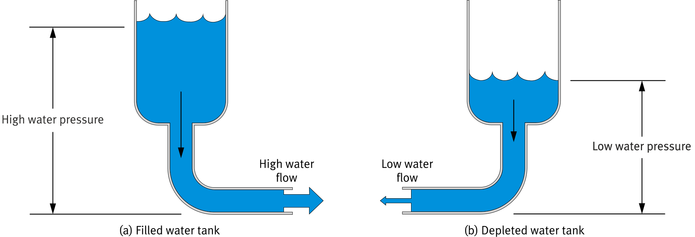
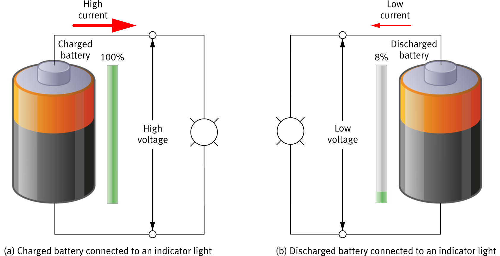
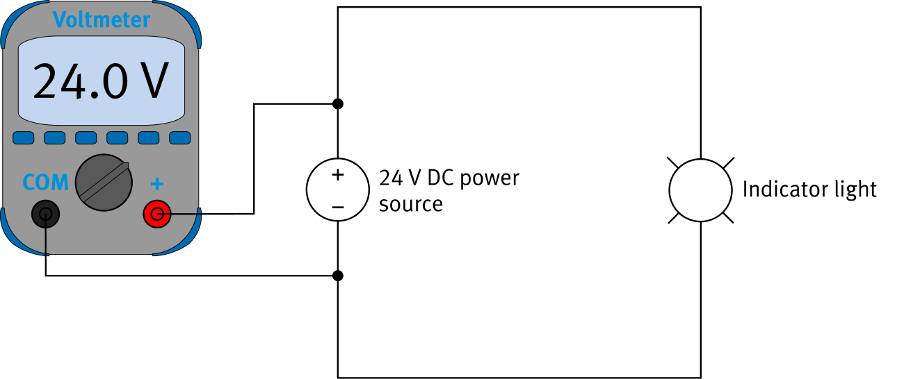
| Component | Symbol |
|---|---|
| Voltmeter | 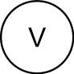 |
The + symbol on the diagram indicates the polarity of the voltmeter probes. The voltmeter is connected in parallel with the power source.
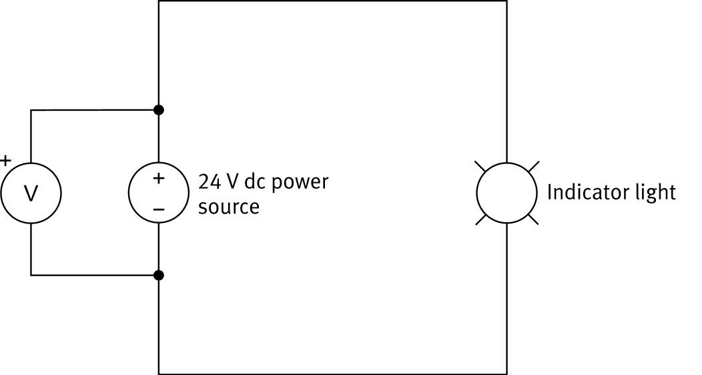
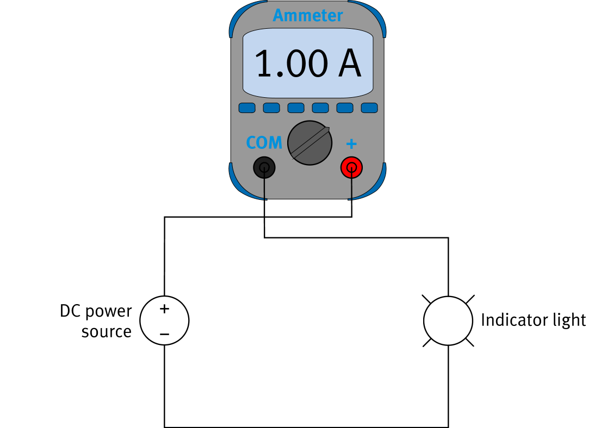
| Component | Symbol |
|---|---|
| Ammeter | 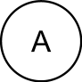 |
The + symbol on the diagram shows the polarity of the ammeter probes. The ammeter is placed in series — current must pass directly through it.
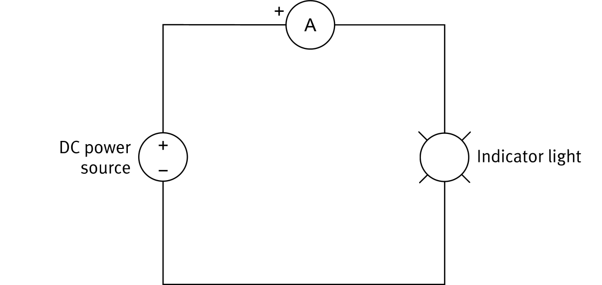
A multimeter combines multiple measuring instruments in one device. Most measure DC and AC voltages, DC and AC currents, and resistance.
The measurement function is selected with a rotating knob. DC and AC modes are identified by their symbols:
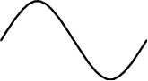
ACFunctions labeled in red on the multimeter are not yet covered in this course.
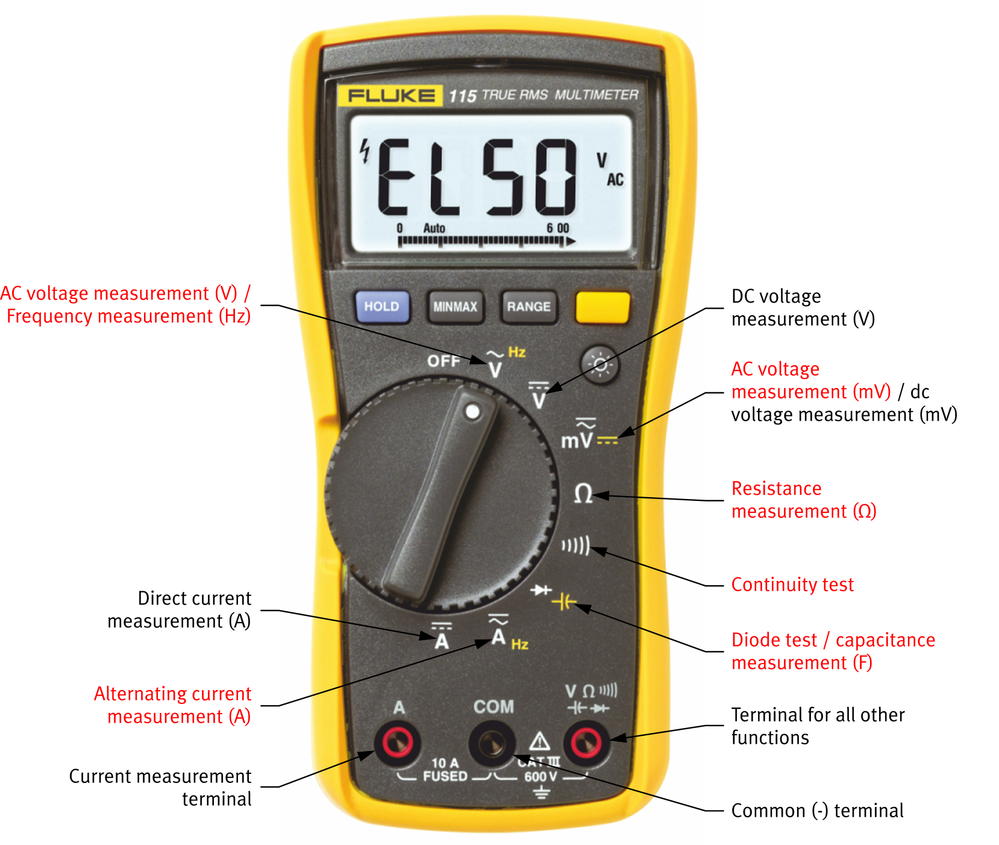
Always verify the following before making a measurement:
The DC motor in the training system converts electrical energy into kinetic energy, making the rotor (rotating part) spin.
Applying a different voltage changes its rotation speed rather than stopping operation. At 24 V, it rotates at 50 r/min.
| Component | Symbol |
|---|---|
| DC Motor | 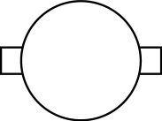 |
DC Motor Symbol
The force that pushes electrons. Measured in volts (V) with a voltmeter connected in parallel.
The rate of electron flow. Measured in amperes (A) with an ammeter connected in series.
Combines voltmeter, ammeter, and ohmmeter. Always verify connection, polarity, function, and range before use.